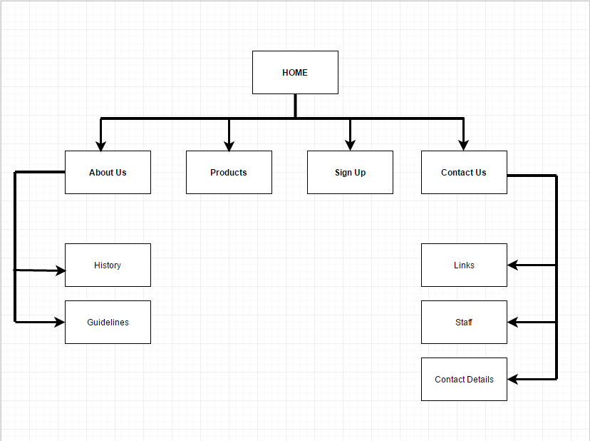

Name: Earl Jan Dimitui
Login: jc432591
The intention of the creation of this website for the costume making company "CossiePlay" increase in revenue and effectively grow as a business by exposing the company to the internet. This is hoped to be achieved by:
By achieving these goals, it is assumed that the company will effectively turn into a bigger and much more successful brand in the cosplay scene and be able to cater to a larger amount of customers and ultimately achieve the intent of the website as stated by the client.
Any type of increase to the amount of customers and purchases in costumes as well as the attendance rates in parties in comparison to the rate in which the company used to achieve in the past will be considered as attributable to the website. A certain period of time that can be allocated such as 3 months could be used as a guideline and compared to how good the business was before the creation of the website by counting amount and putting it in comparison evaluating the success in which the company has gained from the creation of this website.
The target audience is aimed at newcomers, specifically teenagers and potential customers who are starting to get into the world of cosplay in order to introduce a younger audience and increase their variety and their popularity. The site will have a design centred towards a younger audience and also provide the basic needs for the website for casual cosplay customers that enables them to browse through the company's products and find out information about the events that the company holds monthly.
